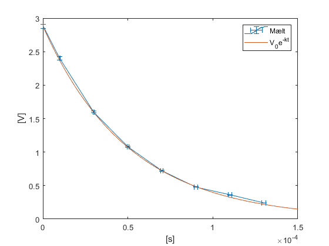

Contents
EÐL207G Verk 4
err = 0.01;
3.1
innraVid = 53;
3.2
1-3
v_r = 0.6047;
4
R = 5e3;
C = 10e-9;
v_r = [2.88 2.4 1.6 1.08 0.72 0.48 0.36 0.24];
t = [0 10 30 50 70 90 110 130]*1e-6;
k = 1/((R+innraVid)*C)
slope = polyfit(v_r, t, 1);
slope = slope(1)
v_rerror = v_r.*err;
terrror = t.*err;
kMes = (log(v_r(1))-log(v_r)).*t.^-1
kMesErr = 1./(t.*v_r).*v_rerror+(log(v_r(1))-log(v_r))./t.^2.*terrror
tau = 1./kMes
figure(1)
errorbar(t,v_r,v_rerror,v_rerror,terrror,terrror); hold on;
x = linspace(0, 150e-6, 100);
mdl = v_r(1)*exp(-k.*x);
plot(x,mdl)
hold off;
xlabel('[s]')
ylabel('[V]')
legend('Mælt', 'V_0e^{-kt}')
k =
1.9790e+04
slope =
-4.5142e-05
kMes =
Columns 1 through 6
NaN 1.8232e+04 1.9593e+04 1.9617e+04 1.9804e+04 1.9908e+04
Columns 7 through 8
1.8904e+04 1.9115e+04
kMesErr =
Columns 1 through 6
NaN 1.1823e+03 5.2926e+02 3.9617e+02 3.4090e+02 3.1020e+02
Columns 7 through 8
2.7995e+02 2.6807e+02
tau =
Columns 1 through 6
NaN 5.4848e-05 5.1039e-05 5.0977e-05 5.0494e-05 5.0230e-05
Columns 7 through 8
5.2899e-05 5.2316e-05

3.3
1
R = 110;
L = 10e-3;
t = [16 48 79.5 112 142 173.5 204.5 236.5]*1e-6;
v_r = [0.576 -0.432 0.328 -0.24 0.176 -0.128 0.096 -0.072];
terror = t.*err;
v_rerror = v_r.*err;
figure(2);
errorbar(t,v_r, v_rerror,v_rerror,terror,terror);
t_mdl = linspace(0,2.4e-4,1e5);
b = R/(2*L)
R = 110;
omega_0 = ((1/(L*C))^0.5)
omega_e = (omega_0^2-b^2)^0.5
syms A l;
eq1 = A*exp(-l*t(1))*sin(omega_0*t(1)) == v_r(1);
eq2 = A*exp(-l*t(7))*sin(omega_0*t(7)) == v_r(7);
Andl = solve([eq1 eq2], [A l]);
lambda = double(Andl.l)
A = double(Andl.A)
f2 = @(p) p(1) * sin(p(2) * t - p(3)) .* exp(-p(4) * t);
f2_mdl = @(p) p(1) * sin(p(2) * t_mdl - p(3)) .* exp(-p(4) * t_mdl);
f3 = @(p) p(1) .* sin(p(2) .* t - p(3)) .* exp(-p(4) .* t) + p(5) .* cos(p(6) .* t - p(7)) .* exp(p(8) .* t) + p(9);
f3_mdl = @(p) p(1) .* sin(p(2) .* t_mdl - p(3)) .* exp(-p(4) .* t_mdl) + p(5) .* cos(p(6) .* t_mdl - p(7)) .* exp(p(8) .* t_mdl) + p(9);
p20 = [A omega_0 0 lambda]
p30 = [A omega_0 0 lambda 0 0 0 0 0 ]
p = fminsearch(@(p) norm(f2(p) - v_r), p20)
hold on;
plot(t_mdl, f2_mdl(p));
hold off;
xlabel('[s]')
ylabel('[V]')
legend('Mælt', 'Best fit from ext. eq.')
b =
5500
omega_0 =
100000
omega_e =
9.9849e+04
lambda =
9.5053e+03
A =
6.7090e-01
p20 =
6.7090e-01 1.0000e+05 0 9.5053e+03
p30 =
Columns 1 through 6
6.7090e-01 1.0000e+05 0 9.5053e+03 0 0
Columns 7 through 9
0 0 0
p =
6.6687e-01 9.7579e+04 -1.6271e-02 9.0503e+03
2
n = 0:0.5:3.5;
x0 = linspace(0, 2.49e-4);
y0 = polyval(polyfit(t,n,1), x0);
fig3 = figure(3);
yyaxis left
errorbar(t,n,zeros(1,8),zeros(1,8),terror,terror,'b-','LineWidth',0.1);
hold on;
plot(x0,y0,'r--', 'LineWidth', 0.1)
yyaxis right
plot(t_mdl, f2_mdl(p),'g-','LineWidth',0.1);
errorbar(t,v_r, v_rerror,v_rerror,terror,terror,'k-','LineWidth',0.1);
hold off;
yyaxis left
xlabel('[s]')
ylabel('[n]')
gca.YColor = 'k';
legend('Mælt', 'Best fit', 'Best fit', 'Mælt', 'Position',[0.5 0.7 0.1 0.2])
yyaxis right
gca.YColor = 'b';
ylabel('[V]')
n = 1:0.5:4.5;
mesOmega_e = 2*pi./t.*(n+1/4)
mesOmega_e =
Columns 1 through 6
4.9087e+05 2.2907e+05 1.7783e+05 1.5427e+05 1.4381e+05 1.3580e+05
Columns 7 through 8
1.3058e+05 1.2620e+05